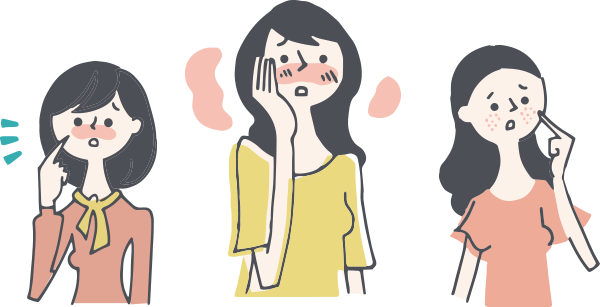
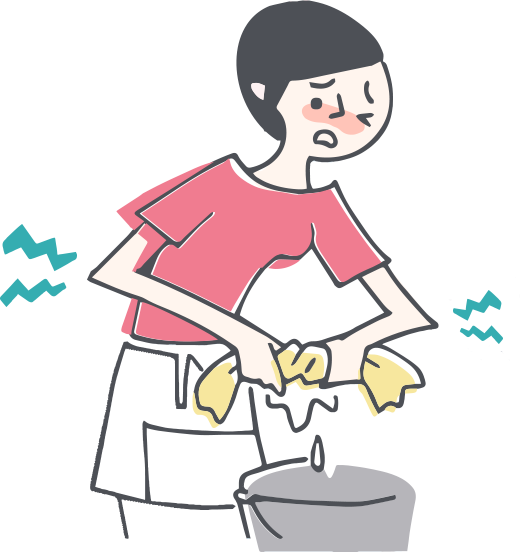
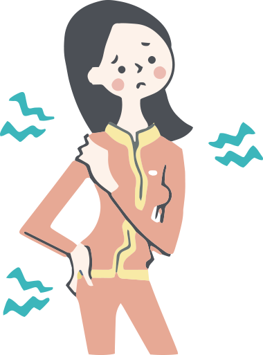
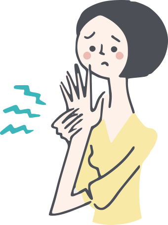

膝蓋痛卻揪出骨鬆、肌少症？提早為健康把「關」，遠離退化性關節炎併發症
走路時膝蓋會喀拉喀拉作響？關節老是卡卡的？
爬樓梯時膝蓋隱隱作痛？長春藤健管中心陳炯瑜醫師指出，隨著年紀增長，不少人的生活中，不時會出現這些狀況，甚至晚上、睡前覺得膝蓋疼痛，且症狀愈來愈嚴重，持續2周以上，小心！這可能就是退化性關節炎的徵兆！
關節「硬碰硬」，影響行動力
據衛福部統計，台灣關節炎盛行率約 15%，相當於 350 萬人口有關節炎的問題，其中以「退化性關節炎」為最大宗；70歲以上老人更有70%以上罹患退化性關節炎。退化性關節炎的問題在於軟骨，作為關節活動、摩擦時的潤滑與保護，像是關節之間的緩衝器一樣。當關節間的軟骨開始磨損，關節與關節「硬碰硬」，不僅容易發生喀拉的關節聲，而且會造成疼痛，症狀從僵硬、輕微疼痛、到嚴重的關節疼痛，嚴重的話，甚至會影響行動力。
陳炯瑜提醒別以為膝關節退化是銀髮族的「專利」，事實上退化性關節炎患者有越來越年輕的趨勢。而體重過重、運動過量、曾經骨折、韌帶／半月軟骨曾經受傷或先天關節結構較為脆弱，都是高危險群。
遠離退化性膝關節炎4大併發症，提早保養是關鍵
很多退化性膝關節炎患者，往往因為走路就痛，慢慢就不想走路，行動受限，運動量減少。而不運動也會使肌力變差，骨質疏鬆，更容易發生跌倒，甚至意外造成骨折，形成惡性循環，嚴重的甚至會危害到生命安全。此外，長期缺乏運動也會使組織器官機能下降30%，血糖、血壓的控制也容易出現問題，提高如三高等慢性病併發的風險。
要保養關節，就要提早保養，減少關節的負擔。體重過重是個大負擔，因此從年輕就要控制體重，讓BMI小於25。此外，必須長期負重如搬運貨物、建築物的工人，長時間下來對膝蓋的磨損，相對比一般人高；而年輕時常穿高跟鞋且久站的老師、櫃姐、空姐等，未來患病的機率也會比較高，不能輕忽。穿著具有強力支撐作用的護膝，或借助搬重物的機具，較能減少膝蓋損傷。
為健康把「關」，做對運動，逆轉關節炎
運動時可以選擇低衝擊有氧運動，對關節的負荷及衝擊比較小，像是快走、游泳、打太極拳都可以。散步、健走雖然是有氧運動，但要預防肌少症，就要增加肌力訓練，深蹲用對力，既能訓練核心肌群又能維護關節力，是不錯的選擇；飲食也要多補充富含蛋白質的食物。
此外，運動時要戴護膝並穿著適當的運動鞋，最好是鞋底有氣墊的鞋子，可以在運動時有效吸收由足底往膝蓋傳導衝擊的能量，保護膝關節。